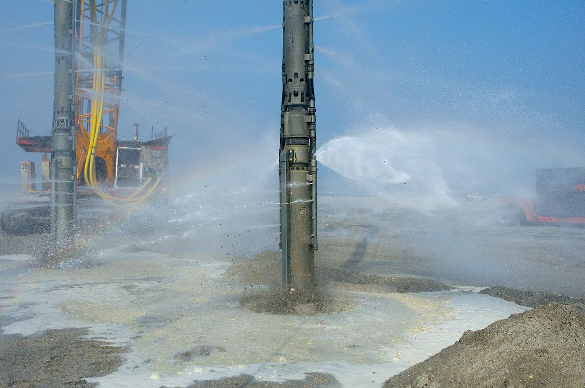
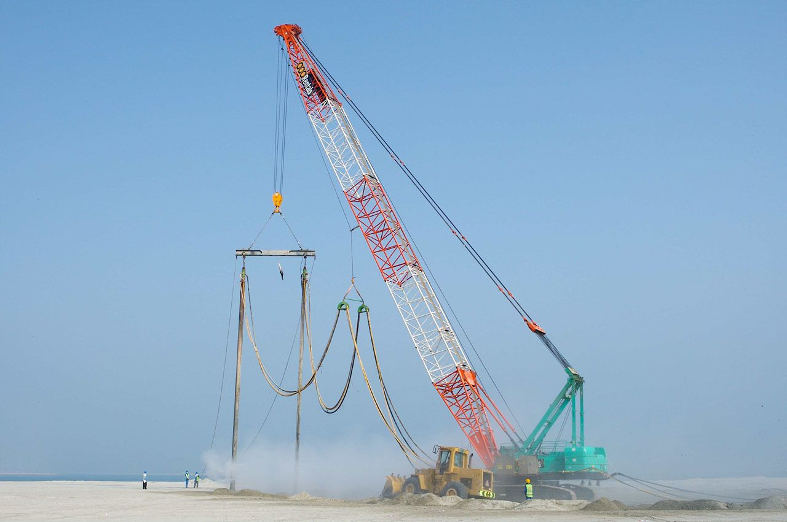
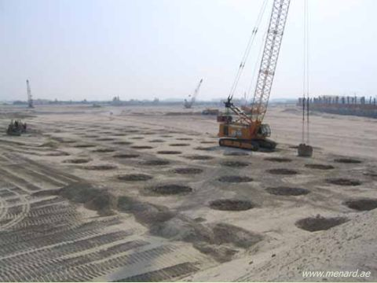

Four method groups – from the ground to the structure
If the calculated settlements are not acceptable, the original design has to be changed. The methods can be combined – the choice depends on the subsoil, the depth of the intervention and the cost. The page follows this order: within the four groups the subsections (1/A, 1/B …) follow one another.
How much settlement is acceptable, and how differential settlement damages a building, is covered in the Settlement tolerance chapter of the Settlement of shallow foundations module. This page deals with the methods of protection.
Changing the foundation
We modify the foundation itself: a larger footing area reduces the contact pressure, the foundation level is taken deeper, or the poor soil below the foundation level is replaced with better soil.
Using a lower contact pressure
We build a foundation with a larger area than bearing resistance alone would require. Lower stresses develop under a wider foundation. In many cases, however, it does not reduce the settlement as much as the designer expects:
- the wider footing itself means a greater weight,
- and above all, under a wider foundation the stresses causing compression reach greater depths – the influence depth increases.
It is effective if there are less compressible layers deeper down (case A). In case B, widening puts more stress on the softer clay layer lower down – so the settlement may even increase: exactly the opposite of what we wanted!
Cases A and B – where does the influence depth lie?
Square pad footing, p0 = 150 kPa additional stress, Kany's stress calculation; the influence depth lies where Δσz = σg/5 (γ = 20 kN/m³, D = 1.0 m). The upper layer is 3.0 m thick.
Effect of footing size and load on the stresses
Kany's stress calculation under a strip footing: Δσz = p0 · k(z/B), with the factors for the characteristic point (B/L = 0); p0 = σcontact − σg is the additional stress. Dashed: the original footing (B = 2.0 m, p0 = 100 kPa); coloured: the modified one. The red dashed line is the σg/5 limit (σg = γ · (D + z), γ = 20 kN/m³, D = 1.0 m): where the additional-stress diagram crosses it lies the influence depth (m0, n = 5). The magnitude of the additional stress is set by the contact pressure, its decrease with depth by the width of the footing – both change the influence depth.
Deeper foundation level – and the basement
This comes into consideration if a foundation level in the compressible layer near the surface gives too much settlement and there is less compressible, better bearing soil not too deep down (a few metres). The embedment next to the foundations then increases, so the safety against bearing failure grows and the foundation width can be reduced.
A strip footing deeper than 2–2.5 m is no longer economical – in that case pad foundations (or caisson foundations) are advisable, tied together at the top by a grid of ground beams.
Under such ground conditions it is worth building a basement if the rooms below ground level can also be used. The basement has a twofold effect:
- the foundation level reaches (or may reach) a deeper bearing layer;
- the weight of the excavated soil increases – this unloads the subsoil.
If the mass of soil excavated for the “basement” is greater than that of the structure placed there, the resultant of the effective stresses transferred to the subsoil is “negative”, and the structure (with a sufficiently rigid RC raft) will be practically immobile – this is the principle of the compensated foundation.
Did you know? The 44-storey Torre Latinoamericana in Mexico City (1956), 182 m high including its antenna, stands on extremely compressible volcanic clay: its base slab is 13.5 m deep, and the load is carried by 361 piles down to a dense sand layer 33 m deep. Its structural and foundation designer, Leonardo Zeevaert, also exploited the weight of the excavated soil – the tower “does not settle, it floats”, and it withstood the magnitude 7.9 earthquake of 1957.
Excavation and compensation
Illustration: approx. 12 kPa/storey + 15 kPa base slab, γ = 19 kN/m³.
Try it: 3D settlement simulator
Larger foundation area → lower contact pressure. Deeper foundation level → a better bearing layer and more excavated soil. But does the settlement always decrease? Rotate the 3D model, drag the sliders and watch the stress bulb, the influence depth and the settlement!
Challenge:
Cost index (concrete + earthworks, initial design = 100):
The simulator follows the steps of the more accurate settlement calculation: permanent load → stress below the footing (below the centre of a rectangular loaded area, Steinbrenner; or Jáky’s linear approximation) → influence depth (Jáky: m0 = B for a square footing; or the 0.2·σ0 criterion of Hungarian practice) → summation by layer: s = Σ Δσz·Δh / Eoed. The effect of excavation is taken into account through the net pressure q0 = q − γ·D; the weight of the footing and the backfill is added to the load. A teaching model, not design software.
Self-check · 1/A–1/B
Soil replacement: out with the bad soil – in with the good
The highly compressible original soil below the foundation level is excavated over its full thickness (within the stressed zone) or only partly, and replacement soil with better properties – sandy gravel, crushed stone, crushed concrete – is placed in its stead, with adequate compaction.
How does soil replacement work?
- Excavation. The highly compressible soil below the foundation level is removed within the stressed zone – or in part of it.
- Widening. On each side, the bottom of the excavation is v·tan ϑ wider than the footing: the load spreads at the angle ϑ, so at the bottom of the replacement layer it is distributed over a width of B + 2·v·tan ϑ.
- Backfilling. Sandy gravel, crushed stone or crushed concrete is spread and compacted in layers of at most 30 cm – above the water table.
- Two checks. Both the stress on the replacement layer at foundation level, σ1 = P/B, and the stress on the base layer at the bottom of the replacement layer, σ2 = P/(B + 2·v·tan ϑ) + γ1·v, must stay below the allowable value.
💧 Above the water table
Soil replacement can generally be done only above the water table, because otherwise it cannot be compacted.
📏 50–80 cm
Partial replacement is usually sufficient; the usual thickness is 50–80 cm.
🧱 Layers ≤ 30 cm
Compact in loose layers of max. 30 cm. A geogrid, geotextile or composite separation layer may be needed.
↔ Widening
It has to be widened laterally in proportion to the thickness of the replacement layer – a lot of earthworks, and the excavated soil has to be carted away.
Safety against bearing failure has to be verified both on the replacement soil below the foundation level and on the soil below the base of the replacement – and of course the settlements must also stay within the limits. A costly (lengthy) solution; today it is typically used for rafts at ground level.
Watch it as an animation
The summary video of method group 1: the principles of lower contact pressure, a deeper foundation level and soil replacement step by step – with layer-by-layer compaction and load spread.
Try it: load spread in the replacement layer
Load spread in the replacement layer (strip footing)
σ2 = P / (B + 2·v·tanϑ) + γ1·v, where γ1 = 20 kN/m³ is the unit weight of the replacement soil – simplified illustration.
Self-check · 1/C
Mechanical compaction
Ground improvement is the artificial improvement of the properties of the soils below the foundation that are dangerous in terms of settlement – by introducing foreign material and/or by compacting the soil. Four mechanical methods are presented below.
Deep compaction – vibroflotation
To reduce the compressibility and increase the strength of loose granular soils and fills. A vibrating tube (deep vibrator) 25–40 cm in diameter, suspended from a crane, penetrates under its own weight to the bottom of the zone to be improved, assisted by water jetting (flushing). The soil around the hole thus formed is compacted; as the vibrator is gradually raised, gravel, hoggin, mine waste or sand is fed into the hole and compacted by the rising vibrator. Compaction is carried out in a grid of suitable density; the method is used for compacting larger areas, for example under heavily loaded warehouse floors.


Dynamic compaction
The compaction effect is achieved by repeatedly dropping a 6–30 tonne pounder from a height of 10–30 m. The weight of the pounder, the drop height, the compaction grid, the number of drops per phase and the duration of the rest periods are determined from the soil properties and the requirements. Effective to a depth of max. 6–8 m, in loose granular deposits and fills. It is used for compacting larger areas, for example under heavily loaded warehouse floors.
Ménard–Mayne estimate: d ≈ n·√(W·H) (W in tonnes, H in metres), n ≈ 0.5 for most soils, 0.35–0.40 for saturated fine-grained soil. An estimate – the actual depth of influence is verified by trial compaction; in practice max. 6–8 m.

Try it: drop it yourself!
Drop it yourself!
Stone pillar
The difference from dynamic compaction: during pounding, granular material (sandy gravel, crushed stone or mine waste) is gradually placed under the pounder, which the pounding rig “works” into the very soft subsoil. Effective in cohesive and organic soils.
The effect is twofold:
- the displacement of the granular material considerably compacts the soft subsoil;
- granular “pillars” of high bearing capacity and larger diameter (Ø 2.0–3.5 m) are formed.
The footage on pounding also shows how stone pillars are made.
Vibro stone columns (gravel piles)
In principle similar to stone pillars, except that smaller-diameter columns – piles – of granular material are formed. An economical ground improvement solution that can be adapted to a wide range of soil conditions and foundation requirements; extremely quiet, with low vibration.
The bottom-feed deep vibrator penetrates to the design depth or to the specified soil resistance, displacing the soil sideways; besides vibration, penetration is assisted by hydraulic pull-down and compressed air. Fields of application: embankment foundations and foundations of industrial floors.
Try it: grid and effect
Grid and effect (plan view)
Unit cell model: as = C·(d/s)², C = 0.907 (triangular) / 0.785 (square); settlement reduction s/s0 = 1 / [1 + as·(n − 1)]. The columns also speed up consolidation as vertical drains.
Self-check · 2/A–2/D
Grouting, stabilisation
In grouting, a binder is injected into the pores, fissures and voids of the soil or rock through drilled or driven pipes. Reducing the void volume improves the strength and deformation properties. In mass stabilisation, the soil is mixed in place with a binder.
The grouting process
The first step of grouting is always drilling the holes; there are countless methods, for example (cased) percussion drilling, bucket drilling, chisel drilling, rotary drilling, or driving or vibrating in drill pipes. The grouts are typically cement suspensions, cement mortars and (chemical) solutions. By substantially reducing the void volume, the strength and deformation properties of the soil improve.
Five grouting methods – what does the grout do to the soil?
The grouting methods differ in what the injected material does to the soil. It may only fill the existing voids, displace and compact the soil, fracture and lift it, or fill an existing void.
| Method | What happens to the soil? | Soil | Pressure, material | Typical application |
|---|---|---|---|---|
| 3/A · Permeation | the grout fills the voids; the void volume and the soil structure do not change | granular soil, coarse silt | low pressure, low-viscosity material | underpinning, sealing, excavations |
| 3/B · Compaction | voids formed stage by stage, the surrounding soil is compacted | loose soil, also silt and clay | higher pressure, stiff mortar | load-bearing columns, re-levelling floor slabs |
| 3/C · Rock fissure | the fissure network of the rock is filled | fissured rock | permeation type, cement-based | rock slope, tunnel crown and face, rock under foundations, watertightness |
| 3/D · Fracture/compensation | the ground fractures, the grout sheets lift it | soil and rock | high pressure, low-viscosity, fast-setting grout, in several stages | most often in tunnelling; settlement compensation, re-levelling |
| 3/E · Void filling | an existing void is filled | voids, cellars, galleries | by gravity or at low pressure; improved cement mortar, expanding PU foam | void under a floor slab, rock cavity, cellar, mine gallery, shaft, utility pipe |
Grouting materials and soil grading
Cement grouting (permeation grouting with cement)
The perforated grout pipes are placed 50–100 cm apart, and the cement grout or cement-sand mortar is injected at a pressure of 7–10 atm. The voids have to be larger than the diameter of the cement particles, so only sand-gravel coarser than 0.8–1 mm, or cohesive soil with cavities and fissures, can be grouted with it. Grouting must proceed from the bottom upwards as the pipe is withdrawn.
Two-component, expanding resin
In sandy and silty soil (not effective in clay). It enters the soil as a liquid at higher pressure, fills cavities, gaps and cracks and binds the grains together; after a few minutes it starts to expand and forms a very hard geocomposite with the soil – the cohesion increases and the pore volume decreases considerably. Common for retrofit strengthening of foundations.
Retrofit strengthening of a foundation by grouting – step by step
Try it: the five methods as an animation
Choose a method and start the animation!
Permeation grouting
the grains stay in place, only the voids are filled
Try it: which material gets into the voids?
Which material gets into the voids?
Outlook: according to a widely used rule of thumb, cement-based grouting is possible if N = D15(soil)/D85(grout) > 24, and not possible if N < 11. The mean particle size of Portland cement is about 15 µm, that of microfine cement 3–4 µm (95% of its particles are finer than 20 µm).
Mass stabilisation
The soil and the binder are mixed with a special mixing head. The mixing boom is mounted on a hydraulic excavator with a slewing superstructure; at its lower end is a mixing head rotating about its axes, to which mixing paddles developed for the soil can be fitted. During mixing the head is moved up and down, while the binder is fed continuously through the head at high pressure from self-propelled silos connected to the excavator; the operator controls the quantity from the cab. The binder depends on the soil to be improved: lime, cement, gypsum, granulated blast-furnace slag or a mixture of these. Mass stabilisation is one type of deep mixing (alongside column-type and panel-type mixing, e.g. CSM).
Stabilisation must always start from stable ground – the plant train stabilises the soil ahead of itself as it advances. The stabilised area does not reach its final bearing capacity at once: if necessary, a load-distributing layer of geotextile, geogrid and granular material is built.
Outlook: in a pilot project in Helsinki the best result in peat was achieved with 100 kg/m³ of cement; the binder accounted for nearly half of the total cost, and the strength may even double between 30 and 90 days.
Try it: plan the job!
Plan the job!
The plant train starts from stable (already stabilised) ground and mixes the soil ahead of itself
Self-check · 3/A–3/F
Design measures
When we improve not the ground, or not only the ground: preloading forces the settlement to take place in advance, the design of the structure and the construction sequence make differential settlement tolerable, or we switch to deep foundations.
Preloading: let it settle first – without the building
The settlement of the structure is reduced by “forcing out” at least part of the compression of the subsoil with a surcharge placed in advance. The layer then behaves like a geologically overconsolidated layer: under the load placed on the foundation, a much smaller specific compression has to be expected.
Mexico City
The capital was built on the site of an old volcanic lake, filled with very thick, highly compressible lake sediment deposited from fine volcanic ash. The whole city is settling – in places by metres. A classic example is José A. Cuevas's solution for the Lotería Nacional (“El Moro”) building in the 1930s. The building was given a compensated foundation: as much soil was excavated as the weight of the finished building would roughly replace. After excavation the bottom of the pit heaved (up to 127 cm was measured). So temporary ballast was placed on the rigid reinforced concrete substructure up to the design weight of the building – the original design specified gravel, concrete blocks were used in construction. The soil thus got its former load back, and the deformation took place before the superstructure was built. During construction the ballast was reduced day by day by the weight that had been built in: the total weight stayed nearly constant. This does not stop the regional subsidence of the city.
Outlook – vertical drains: in a thick clay layer consolidation can take years (the consolidation time is proportional to the square of the drainage path length). With prefabricated vertical drains (PVD) the water reaches the drain horizontally, by a short path – so the preloading time can be cut to months.
Try it: preloading and unloading
Void ratio – effective stress
Settlement versus time
Illustrative model: 6 m thick normally consolidated clay, σ′0 = 60 kPa, Cc = 0.45, Cr = 0.06, e0 = 1.2. If Δσ ≤ Δσp, the soil below the building compresses only along the reloading branch (with a small slope).
Ballast + building = constant load
Self-check · 4/A
Structural measures: if we cannot shape the ground, we shape the structure
Choosing the right stiffness for the structure: it should either be so rigid that it can carry the stresses from differential settlement without damage, or so flexible that it can follow the deformations from settlement without damage (within the specified limits, of course).
In an area prone to settlement, design a statically determinate structure if possible: there are no rigid connections, and in the event of significant differential settlement the columns, beams and floors can rotate relative to each other (pinned connections), so no additional internal forces develop.
Utilities: for structures designed for large settlement, proper connection of service pipes and utilities has to be provided – oval opening, flexible pipe + sleeve.
Try it: support settlement and settlement joint
Support settlement in a frame
Settlement joint
Long building parts with different loads are best separated by a settlement joint – it is needed anyway because of thermal expansion.
The right construction sequence
Structural parts sensitive to settlement should be built as late as possible. Opposing tendencies:
- mechanisation, plant commitment, prefabrication – these argue for speeding up construction;
- pore water pressure increase (for foundations on saturated clay) – this dictates slowing down the rate.
For structures with large imposed loads (silos, liquid storage tanks) the rate of loading can be controlled; the settlement of bridge abutments can be influenced by the construction time of the backfill.
Rate of construction on saturated clay
Designing deep foundations
If the calculations show unacceptable settlements or differential settlements for a shallow foundation, many designers switch to deep foundations (piles, diaphragm walls). In many cases this is the simplest, fastest and cheapest solution.
Deep foundations in detail
CFA piles, screw, bored and precast piles, micropiles, jet grouting, deep mixing, diaphragm walls, caisson and box foundations – in the Deep foundations interactive module, with a 3D pile builder. In real footage:
Self-check · 4/B–4/D
Which method, when?
Now that you have met every method, try it out: set the soil, the groundwater level and the depth of the problem, and see which methods come into question. Below it is the summary table of the methods.
Method selector – which ones are possible?
What is the problem soil?
Where is the groundwater?
How deep is the problem?
Is there a better layer deeper down?
Situation
A simplified decision aid for teaching, based on the conditions of application of the methods – the real choice is always based on ground investigation and calculation.
Summary table
| Method | Suitable soil | Depth, typical data | Limitation, remark |
|---|---|---|---|
| 1/A Lower contact pressure | if there is a less compressible layer deeper down | wider foundation, lower q | the weight and the influence depth increase; with reversed layering it can make things worse |
| 1/B Deeper foundation level | a better bearing layer within a few metres | basement: the excavated soil unloads the ground | a strip footing deeper than 2–2.5 m is not economical |
| 1/C Soil replacement | any poor soil, in a shallow zone | 50–80 cm, compacted in layers ≤ 30 cm | only above the water table; widening: B + 2·v·tanϑ |
| 2/A Deep compaction | loose granular soil, fill | vibrator Ø 25–40 cm, with flushing | fines content approx. < 10–12% |
| 2/B Dynamic compaction | loose granular deposit, fill; large area | 6–30 t pounder, 10–30 m drop height; max. 6–8 m | strong vibration – not next to buildings |
| 2/C Stone pillar | very soft cohesive and organic soil | granular material pounded in, pillars Ø 2.0–3.5 m | displacement compaction + load-bearing elements |
| 2/D Gravel pile | adaptable to a wide range of soil conditions | bottom-feed deep vibrator, Ø ≈ 0.6–1.0 m | also acts as a vertical drain |
| 3/A Permeation grouting | granular soil, coarse silt; with cement only coarser than 0.8–1 mm | cement grouting: pipes every 50–100 cm, 7–10 atm | fills the voids; from the bottom upwards |
| 3/B Compaction grouting | loose soil, also silt and clay | stiff mortar, bulbs stage by stage | compacts, forms load-bearing columns |
| 3/C Rock fissure grouting | fissured rock | filling the fissure network | slope, rock under foundations, watertightness |
| 3/D Fracture/compensation grouting | soil and rock | high pressure, fast-setting material | settlement compensation, re-levelling buildings |
| 3/E Void-filling grouting | voids, cellars, mine galleries | by gravity or at low pressure | improved cement mortar, expanding PU foam |
| 3 Two-component resin | sandy, silty soil | expanding geocomposite | not effective in clay; retrofit strengthening |
| 3/F Mass stabilisation | peat, soft clay, organic soil | mixing head 1.5 m × Ø 0.95 m; depth usually ≤ 5 m | starts from stable ground; hardening takes time |
| 4/A Preloading | saturated, compressible cohesive soil | surcharge ≥ the later building load | long time – can be accelerated with drains |
| 4/B–C Structure, sequence | – | rigid or flexible structure, settlement joint | supplementary tool |
| 4/D Deep foundations | if the bearing layer is deep | pile, diaphragm wall | often the simplest and fastest |
Animations and real footage
Two 3D animations of the principles – with music and captions – and real footage in English (Geotech Project channel) showing how ground improvement is carried out on a real site. Click a card to play; full screen is also available in the player.
Real footage from the Geotech Project channel
40 true or false statements
Decide on each one – you get an explanation straight after answering.
The Foundation Engineering modules
Protection against harmful settlement is the second part of station 5. The other interactive modules present the steps of foundation design in the same system.